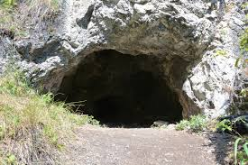
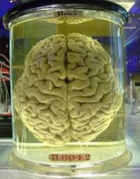
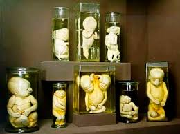
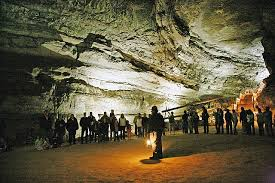
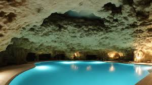
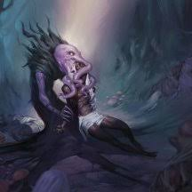

Приключение: Они
Предыстория приключеня
3 Года назад произошел обвал в угольной шахте говорят. Говорят там умерло несколько шахтеров, но это лишь слухи. С тех пор местные сторонятся этой шахты из-за приведений. Тогда-же в городе начали пропадать люди. Кто то видел, что они уходят в сторону леса, при попытке их остановить, они становились агрессивными, и сбегали при первой возможности. До сих пор не удалось остановить ни одного.
Обзор приключеня
--
Часть 1: Таверна "Мыс уродов"
Приключение начинается в таверне "Мыс уродов", одной из таверн Луки Бирна. Здесь собираются в основном моряки и наемник. Тут нельзя найти ничего кроме неприятностей.
Мыс уродов - большая старая темная таверна, у которой бывали времена и получше. Мебель износилась, штукатурка, когда-то белая, теперь пожелтела и осыпается, а люстры и лампы поржавели. Мебель носит следы интенсивного использования и шрамы от разных потасовок. Человеческая женщина с длинными темными волосами моет кружки за барной стойкой, болтая с грузным лысым мужчиной в ливрее с символикой "Сирот", сидящем на барном стуле. С кухни доносятся звуки готовки и сильный запах капустного супа. В это время суток народу здесь немного, но и не совсем пусто: посетители сидят тихонько по углам.
В таверну входит группа студентов, один из студентов игрок, а еще один гном.
В таверне не утихает спор между бандитами, одытыми в похожую форму.
-- Это все проклятая шахта!
-- Что ты мелишь, ее закрыли уже как год, да и не умер там ни кто на самом деле.
-- Это все дух шамана!
-- Думаю их вербуют Наги!
-- Какие нахер Наги? Грязь, заткнись и принеси мне выпить!
-- А знаете что странно? -- театральная пауза -- Ни один блядский карлик еще не исчез. Пропадали эльфы, люди, гоблины, но не ебаные гномы!
Все поварачиваются в сторону компании.
Драка
Разбойники пытаются поднять за шиворот гнома. Если это у них получается то они устраивают допрос, с целью узнать что он знает о пропавших.
-- Где ты был вчера днем?
-- Где ты познакомился с Евой Столч?
-- Что ты прячешь в кармане, карлик?
После нахождения неприятностей в таверну, сильно прихрамывая, заходит Лука Бирн.
Лука Бирн - До первой войны, в городе преступность почти отсутствовала, но с ее окончанием в городе осталось мало рабочих мест, а бывшие солдаты, наученные военному делу стали заниматься грабежами и образовывали банды. Одной из банд стал заправлять Лука. Через несколько лет его "Сироты" стали почти единственной бандой, ну и вообще силой в городе. Теперь он стал самоназваным правителем, установив олегархию с собой во главе. Многие думают, что без него весь город политит к чертям.
Отыгрыш Луки Бирна
Лука Бирн - суровый, но справедливый вояка. Всегда разговаривает с большими промежутками между словами.
-- Чертовы псы, что тут происходит!?!?
-- (что то мямлят)
Лука подходит к стойке.
-- Билли ушел...
-- Где он?
-- (отрицательно машет головой)
Трактирщик, берет бутылку и уходит к себе. Лука занимает место трактирщика
Распрос
Если компания решит узнать что произошло, то они узнают, что Билли это брат трактирщика (Николы). Им расскажут про шахту и пропажи людей.
В один момент в таверну врывается Филлипо Бранелли, один из капитанов "Сирот"
Отыгрыш Филлипо Бранелли
Филлипо Бранелли - молодой, умный и добрый, стал капитаном блягодаря своим талантам во владении оружием и широкими познаниям в наркотиках. Редко заикается во время речи.
-- Мы нашли Билли!
Лука командует ему собрать людей
-- Гном, ты идешь с нами! -- Кто то из людей луки
Часть 2: Шахта "Карандаш"
Когда толпа людей прибыла к шахте они увидели ужасную картину: Билли сидел, опершись на корягу, а его череп был вскрыт, и часть мозга отсутствовала.
Осмотр тела
При осмотре тела со сложностью медицины 16, возможно обнаружить следующее:
- Телу не более 3 часов
- Мозг имеет следы поедания
При осмотре тела со сложностью медицины 18, возможно обнаружить следующее:
- Помимо следов поедания обнаруживается странная слизь, не похожая на, что то из мозга.
После осмотра тела отряд из 10 человек продвигаетесь в глубь шахты
Потолки шахты низкие и неровные, свисающие камни и корни деревьев создают ощущение, что сама земля пытается задушить тех, кто осмелится проникнуть в ее глубины. В некоторых местах туннели сужаются до такой степени, что приходится ползти на четвереньках, чувствуя, как холодные камни впиваются в кожу.
Внимательность
При пассивной внимательности от 20 игроки замечают куалит. Если игроки его касаются то видят видение:
Быстро перемещающаяся по положениям перед лицами жителей города точка зрения. После того как вы увидете всех, в том числе и себя вы видите предпоследнего, на котором точка зрения останавливается на некоторое время. Последнее лицо вы гдето видели, но оно вам не знакомо. Через мгновение вы видите труп Билли и видение заканчивается.
После этого вы можете запомнить последовательность последних лиц, их колличество расчитывается так: спас интелекта-10/2. Максимум 5.
- ? (Элайджа Торн) знаком Луке и остальным капитанам "Сирот"
- Лука Бирн глава "Сирот"
- Бен Столч бандит, напавший в таверне на гнома
- Никола Линч казначей "Сирот"
- персонаж игрока
Если спас менее 9 то проявляются негативные эффекты. (1k6)
- 1. Персонаж забывает 1 заклинание
- 2. Персонаж забывает последние 5 минут
- 3. Персонаж впадает в психоз на 5 минут
- 4. Персонаж чувствует сильнейшую головную боль (1k4 пси урона)
- 5. Персонаж чувствует легкую головную боль (1 пси урона)
- 6. Персонаж теряет сознание на 30 минут
Незнакомец
Высокий и мускулистый мужчина с короткими темными волосами и густой бородой. Его глаза светятся добротой и решимостью, а на лице видны шрамы, оставленные многочисленными сражениями. Он носит кожаные доспехи, украшенные серебряными узорами, и на плече у него висит плащ.
С продвижением в шахту Филлипо облился потом и стал странно ходить, а через 15 минут ходьбы его стошнило и он упал на землю.
Медицина
При осмотре Филлипо со сложностью медицины 14 игроки узнают у него приступ клаустрофобии. Для остановки панической атаки необходимо ущепнуть Филлипо.
В конце шахты вы видите тупик.
-- Син, когда мы сможем это расчистить?
-- Это займет не меньше 3 дней.
Часть 3: Ожидание
Пока раскопки не закончаться, игрокам необходимо спасти незнакомца из ведения.
Сбор информации
Если игроки распросят кого-то из капитанов "Сирот" то смогут узнать, что они видели Элайджу Торна, либо игроки могут зайти в церков, где на исповеди встретят его.
Отыгрыш Элайджа "Сердце" Торна
Элайджа — человек с сильным чувством справедливости и сострадания. Он пытается придумать метафору каждый раз когда может.
Примеры фраз:
- "Мы не оставим никого в беде. Каждый заслуживает шанс на лучшую жизнь."
- "В этом мире есть место для доброты и сострадания. И мы докажем это своими делами."
- "Неважно, откуда ты пришел, важно, кто ты есть сейчас. И я верю, что в каждом из нас есть свет."
- "Мы — братья и сестры по оружию, и вместе мы сможем преодолеть любые трудности."
Если персонажи выйдут на улицу с Элайджей, то на них нападут.
-- Как вы посмели! Это из-за вас мою дочь похитили!
Для спасения Элайджи необходимо запереть его на долгое время, и кормить в течении 1 недели, далее эффект перейдет на следующего в списке, но вернется после окончания на следующей жертве.
После они должны направиться к Луке. В ходе диалога они узнают, что Луку уже около месяца мучают страшные сны, и после каждой пропажи у него начинаются головные боли.
Лука уже давно сопротивляется подчинению, благодаря своей необычайной силе воли, но однажды он может быть побежден. В его видениях, на него смотрят некие осминого-подобные существа, с телами гуманоидов. Что-бы узнать что это Илитид(Свежеватель разума) необходим спас интелекта сл 16.
Часть 4: Возвращени
Вход
Однажды игроки проследуют за одним из захваченых и пройдут к шахте, либо дождуться конца раскопок.
- Они войдут в шахту и дойдут до тупика. Камни из тупика разложаться в разные стороны, и все смогут пройти далее.
- Раскопки кончаться и туда сможет пройти отряд Луки
Путь
На пути игроки находят множество развилок и куалитов. В них содержаться:
Куалиты:
- Описание экспирементов илитидов
- Список всех пропавших горожан
- Описание Гитъянков: На город у Врот балдура было совершено нападение гитиянков, они были разбиты и город переместился по координатам: (неясные координаты).
Комнаты(1k12):
1/12. Зал мозгов
Свежеватели разума иногда консервируют извлеченные мозги в магической жидкости. Их все еще живыми держат в зале мозгов. Свежеватели разума используют эти мозги для изучения того, как псионика действует на их врагов. Им также нравится бормотание смятенных, пребывающих в ужасе мыслей, которое доносится из этого источника, и иногда сидят здесь и тихо созерцают. Скучные или глупые мозги в конце концов поедают, а самые интересные добавляются в библиотеку мозгов.
2. Библиотека мозгов
Извлеченные мозги, которые являются в каком–то роде необычными, хранятся в библиотеке мозгов колонии. Здесь свежеватели разума ведут дальнейшие тщательные исследования.
3. Комнаты очищения
Свежепойманных жертв сначала приводят в комнаты очищения. С них снимают всю одежду и снаряжение, и либо уничтожают эти предметы, либо оставляют, если они представляют интерес, волосы обривают для избавления от паразитов, а от больных жертв избавляются.
4. Общий зал
Общий зал колонии служит точкой сбора рабов. После окончания задания они приходят сюда отдохнуть, поесть и ожидают новых приказов. Любой свежеватель разума, которому нужна помощь, может прийти в этот зал за необходимой рабочей силой. В случае нападения рабы собираются здесь, вооружаются и готовятся к бою.
5. Бассейн отдыха старшего мозга
Бассейн отдыха обычно расположен в центре логова и там старший мозг принимает посетителей в своем соляном растворе, защищенный почти непробиваемым слоем похожей на стекло субстанции, которая блокирует любые атаки кроме псионических способностей. Здесь отдыхает старший мозг и часто собирает членов колонии на дебаты по философии и природе планов. Старший мозг конкретно этой колонии похож на хулигана, известно, что он убивал иллитидов, которые были умнее него в дискуссиях.
6. Комнаты стражей
В комнатах по периметру логова беспрестанно находятся тяжело вооруженные рабы, конструкты и другие соглядатаи. Обитатели этих комнат нападают на чужаков, только завидев их, и трубят тревогу. Вход в логово всегда спрятан секретной дверью, иллюзией или каким–то другим барьером.
7. Жилые комнаты иллитидов
Каждый член колонии занимает отдельную комнату или небольшой набор комнат и использует это место для личных исследований. Комната иллитида может содержать музыкальные инструменты и рабов с мелодичными голосами; а может быть обставлена клетками с образцами, больными различными болезнями, которые исследуют свежеватели разума.
8. Библиотека (и комната вскрытия)
Библиотека логова свежевателей разума – это не коллекция книг, а набор все еще живых органов, хранящихся в той же жидкости, которая держит мозги живыми. Свежеватели разума изучают органы для усовершенствования экспериментов. Проваленные эксперименты из комнаты трансформации обычно приносят сюда, разрезают на органы и добавляют в библиотеку.
9. Тюрьма
Результаты провалившихся экспериментов из комнаты трансформации бросают в клетки и камеры в тюрьме, чтобы они не путались под ногами в логове. В конце концов их перемещают в ближайшую библиотеку.
10. Комнаты головастиков
Старший мозг предписывает держать головастиков в малых бассейнах под охраной, вдали от бассейна соляного раствора. Если бассейн с соляным раствором будет уничтожен при нападении, то у головастиков будет больше шансов выжить.
11. Комната трансформации
В комнате трансформации находится несколько небольших камер. Субъектов многообещающих экспериментов держат здесь и бомбардируют псионической энергией в попытке изменить их психическое развитие. Большинство существ, подвергающихся этому процессу, превращается в искореженных, изувеченных тварей, но некоторые становятся сильнее и выносливей чем раньше.
Характеристики монстров
Обыватель
Средний гуманоид (любая раса), любое мировоззрение
Класс защиты 10
Хиты 4 (1k8)
Скорость 30 Фт
СИЛ
10
ЛОВ
10
ТЕЛ
10
ИНТ
10
МДР
10
ХАР
10
Чувства пассивное Восприятие 10
Языки любой один язык (обычно Всеобщий)
Опасность 0 (10 опыта)
Дубинка. Рукопашная атака оружием: +2 к попаданию, досягаемость 5 фт., одна цель. Попадание: 2 (1к4) дробящего урона.